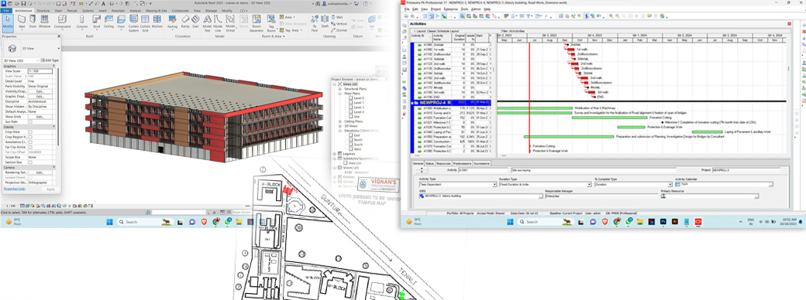
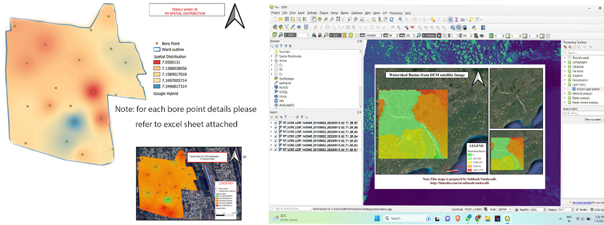

AUTOCAD & REVIT Projects
Redrawn Campus map of Vignan University using AUTOCAD, Landscaping the site at function hall.Created area map using TOTALSTATION data. The thumbnails are shown below
To view the files please visit my google drive folder

GIS Projects
The work done by me is with QGIS opensource software and ARCGIS10 Pro software. First Project is GENERATION OF SPATIAL DISTRIBUTION OF GROUND WATER QUALITY OF WARD 30 IN TENALI is a real time project and the results were accurete .The ward file is Collected from Municipal commissioner and georeferenced using the topo sheet of Andhrapradesh. The feild investigation is done in month of march and april of 2023 and experimental investigation was held in Vignan'sUniversity To view the whole project visit the link below. Thumbnails are given below.
Graphic Designing Works
Using Adobe photoshop I created many creatives i worked to develop many templates and banners even i edited the interior designs and produced Very high quality images to impress clients i am working as a freelancer and deliverd many projects on time. to view my sample designs please vistit the drive. The thumbnails re given below.